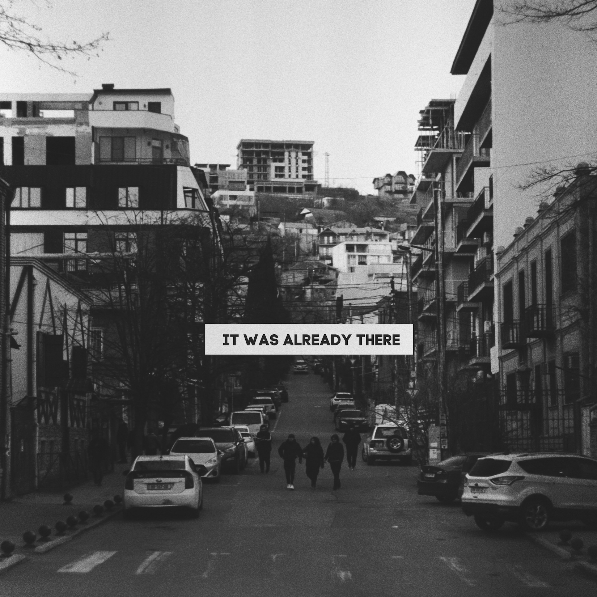
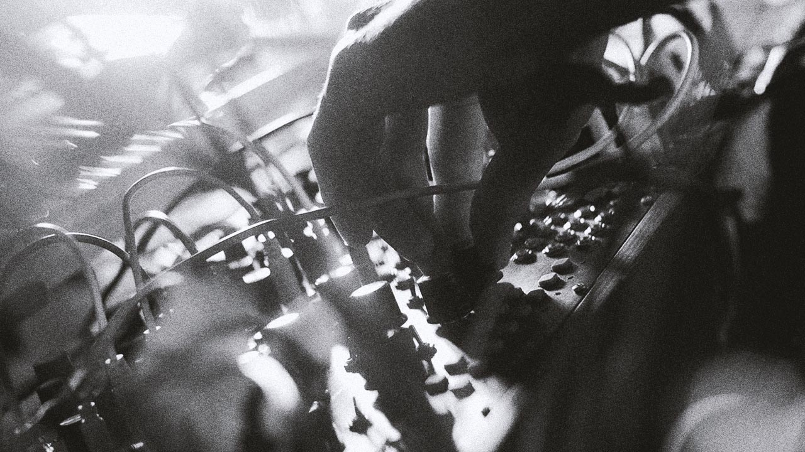

2026
Recorded during a live PeaceTime Station transmission.

Built from modular synthesis, radio broadcasts and environmental sound, the work reflects an approach in which existing signals and events become part of the musical structure rather than material to be controlled or removed.
What emerges is not a composition imposed on reality, but a form discovered within it.
Recorded as a live transmission
Later assembled and released as an album.